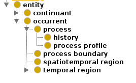

In the context of this work, a lexical regularity, also known as LR, is a consecutive list of words that appear recurrently in a set of ontology class names. For example, lets consider the following excerpt of the Basic Formal Ontology (BFO):
The example above contains a hierarchy of concepts, whose name is shown. Here, the text "process" can be considered as a lexical regularity because it is a text fragment that appears in the name of the classes process, process profile, and process boundary. Then, we say that the classes process, process profile, and process boundary are exhibiting the lexical regularity "process".
Additionally, the classes whose complete name exactly matches with a lexical regularity are called lexical regularity classes, or LR classes. This is the case of the class labelled as "process" in the BFO example.
The analysis of lexical regularities can help to identify structural issues in the ontology, as well as flaws in ontology naming conventions, or even they can be used for axiom discovery by inferring semantic information from the human-readable content of the ontology.